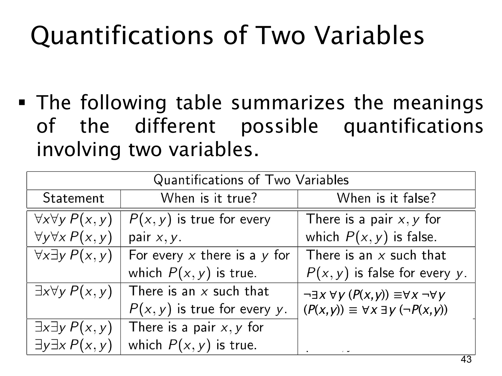

L1.2 · 第 43 页讲解原文
查看这一页课件

两变量量词表：如何否定“某个 x 对所有 y 都合适”
这一页延续同一张表，这次把第三行的否定写完整。第三行原命题是
∃x∀yP(x,y),
意思是“存在一个固定的 x，它与每一个 y 配合时都满足 P”。这个 x 是全体 y 共用的，不可随 y 改变。
要否定它，就必须说“每一个候选 x 都有某个 y 使它失败”。按量词德摩根律逐层处理：
¬∃x∀yP(x,y)≡∀x¬∀yP(x,y)≡∀x∃y¬P(x,y).
这与上一页的 ¬∀x∃yP(x,y)≡∃x∀y¬P(x,y) 恰好形成对照：否定时量词种类互换，但原本的先后位置保留。
例如论域为实数、P(x,y) 表示 x>y。原句“存在一个实数 x 大于所有实数 y”为假；其否定要求对任意给定的 x，找一个 y 使 x>y。取 y=x+1 即可。这是对每个 x 分别给出失败的 y，不要求一个共同的 y 推翻所有 x。
页上表格的第一、二、四行仍作为参照：∀∀ 检查所有数对，∀∃ 允许随 x 选 y，∃∃ 只需某一数对。第三行最值得注意的是“一个 x 对所有 y”的共同见证要求。